01 Februari 2026
Admin RA AZ ZAHWA BINJAI
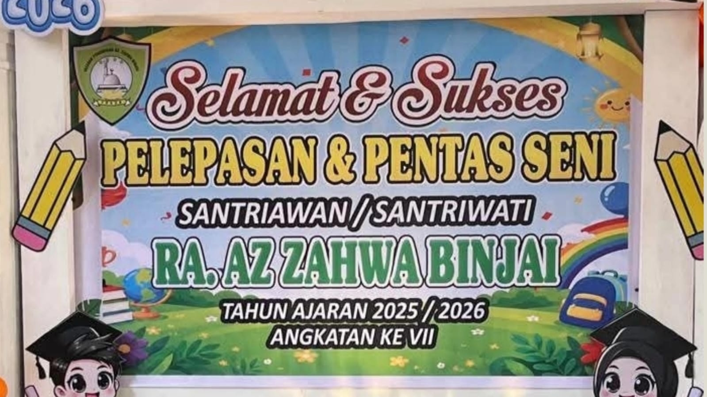
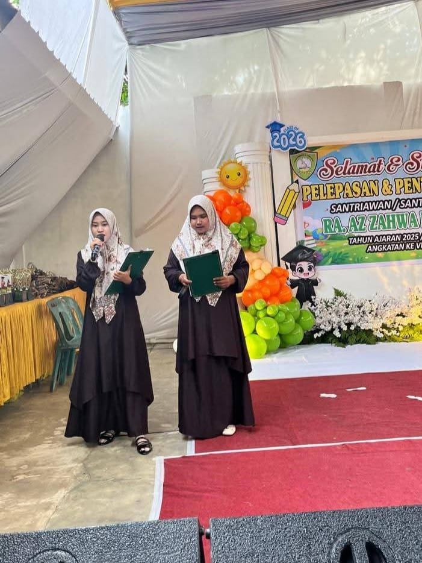
Acara dipandu dengan penuh semangat oleh para Umi (guru) yang bertugas sebagai pembawa acara (MC). Sejak awal kegiatan, para orang tua dan tamu undangan tampak antusias menyaksikan berbagai penampilan yang telah dipersiapkan oleh siswa-siswi.
Sebelum memasuki rangkaian pentas seni, Kepala RA AZ ZAHWA BINJAI, Ibu Ruziah Aini, S.Sos.I, S.Pd.I, S.Pd., menyampaikan sambutan dan pesan kepada seluruh peserta didik serta orang tua yang hadir. Dalam sambutannya, beliau mengucapkan rasa syukur atas terselenggaranya kegiatan Pentas Seni dan Perpisahan Tahun Ajaran 2025/2026.
Beliau juga menyampaikan apresiasi kepada para guru dan orang tua yang telah bekerja sama dalam mendidik serta membimbing anak-anak selama menempuh pendidikan di RA AZ ZAHWA BINJAI. Menurut beliau, keberhasilan anak-anak dalam belajar dan berkembang tidak terlepas dari dukungan keluarga dan sekolah yang berjalan seiring.
"Semoga ilmu, akhlak, dan pengalaman yang telah diperoleh selama belajar di RA AZ ZAHWA BINJAI dapat menjadi bekal yang baik bagi anak-anak untuk melanjutkan pendidikan ke jenjang berikutnya. Teruslah belajar, beribadah, dan berbakti kepada orang tua," pesan beliau di akhir sambutan.
Kegiatan diawali dengan pembacaan ayat suci Al-Qur'an beserta terjemahannya yang dibawakan oleh siswa-siswi RA AZ ZAHWA BINJAI. Penampilan tersebut menunjukkan kemampuan anak-anak dalam membaca Al-Qur'an sekaligus memahami makna yang terkandung di dalamnya.
Selanjutnya, seluruh siswa-siswi menyanyikan lagu kebangsaan Indonesia Raya dengan penuh semangat, dilanjutkan dengan lagu Guruku Tersayang sebagai bentuk rasa hormat dan terima kasih kepada para guru yang telah membimbing mereka selama menempuh pendidikan.
Berbagai penampilan seni turut memeriahkan acara, di antaranya Tari Persembahan Melayu yang dibawakan dengan anggun oleh para siswa, serta tarian tradisional Batak Toba "Sik Sik Sibatumanikam" yang berhasil menghibur seluruh hadirin.
Tidak hanya itu, siswa-siswi juga mempersembahkan lagu berjudul "Ibu" yang dibawakan dengan penuh penghayatan sehingga mengundang rasa haru dari para orang tua yang hadir. Penampilan pembacaan puisi bertema ibu juga menjadi salah satu momen yang menyentuh hati dalam kegiatan tersebut.
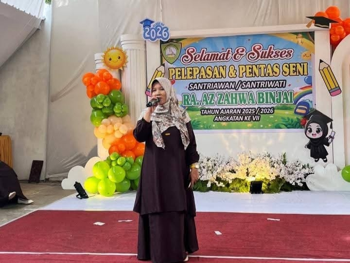
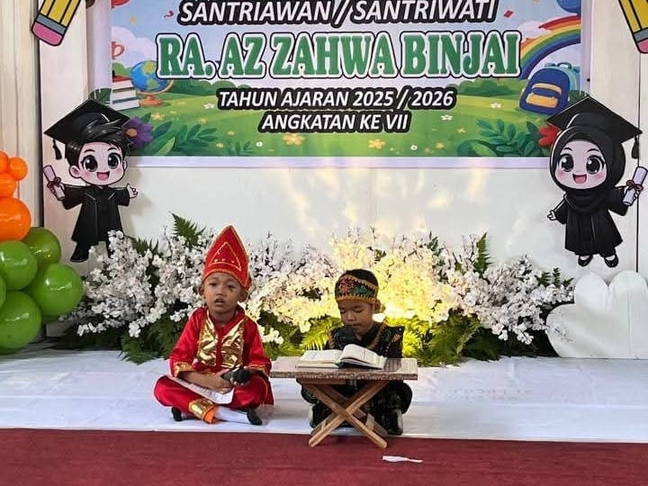
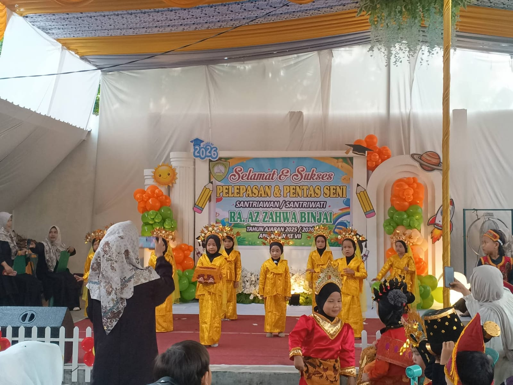
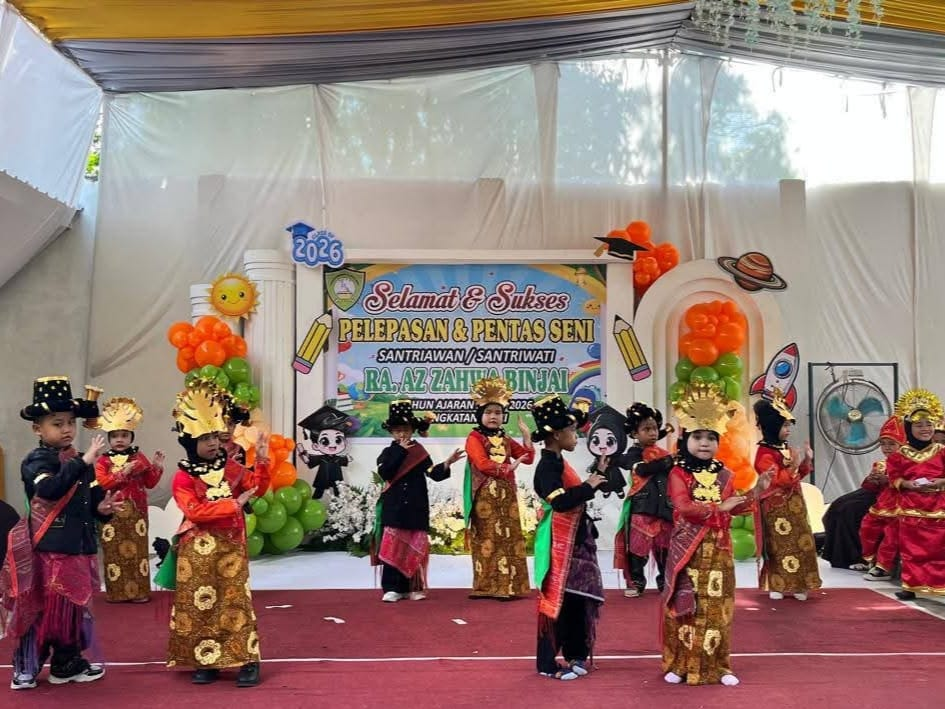
Sebagai bentuk partisipasi para pendidik, para Umi turut menampilkan tarian tradisional yang diiringi lagu daerah berjudul "Sinanggar Tulo". Penampilan tersebut mendapatkan sambutan hangat dan tepuk tangan meriah dari seluruh tamu undangan.
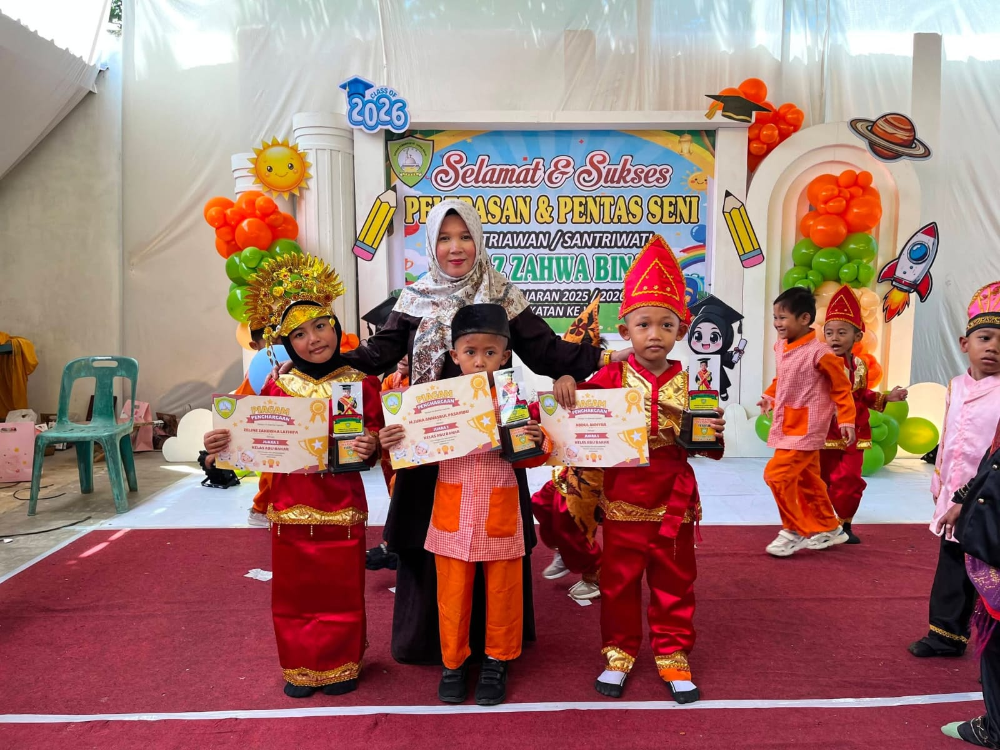
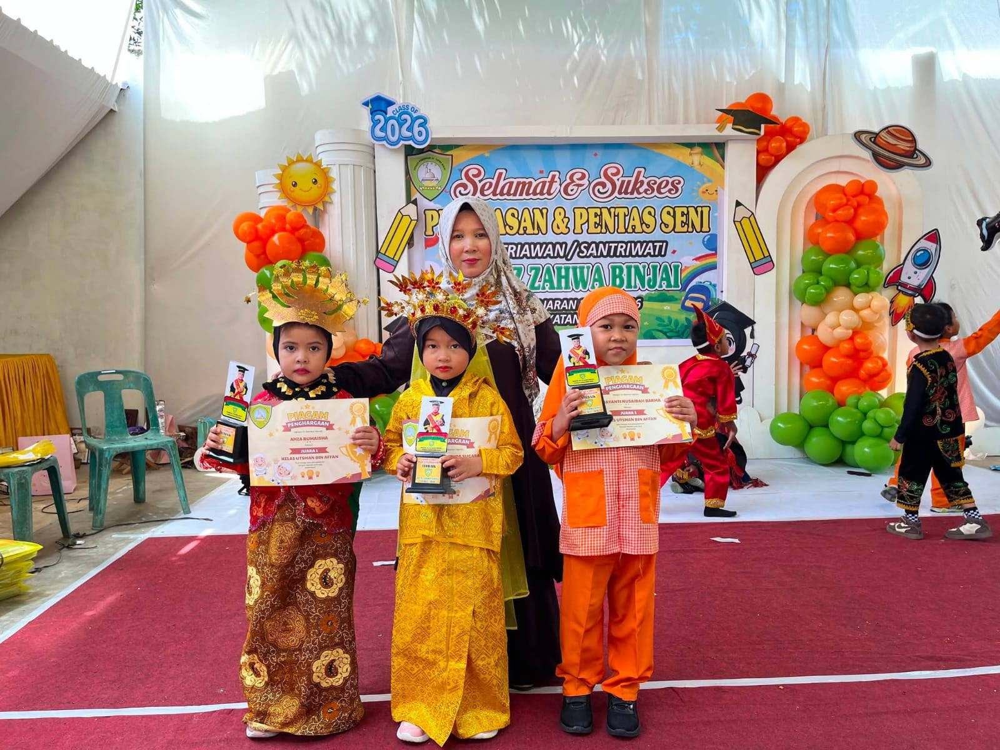
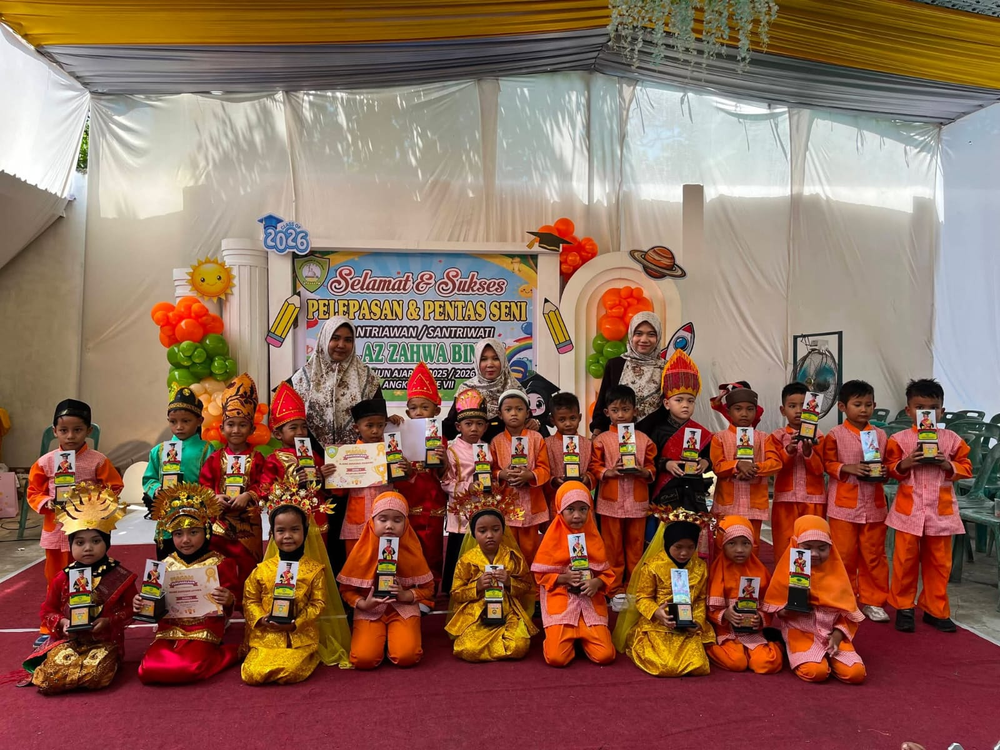
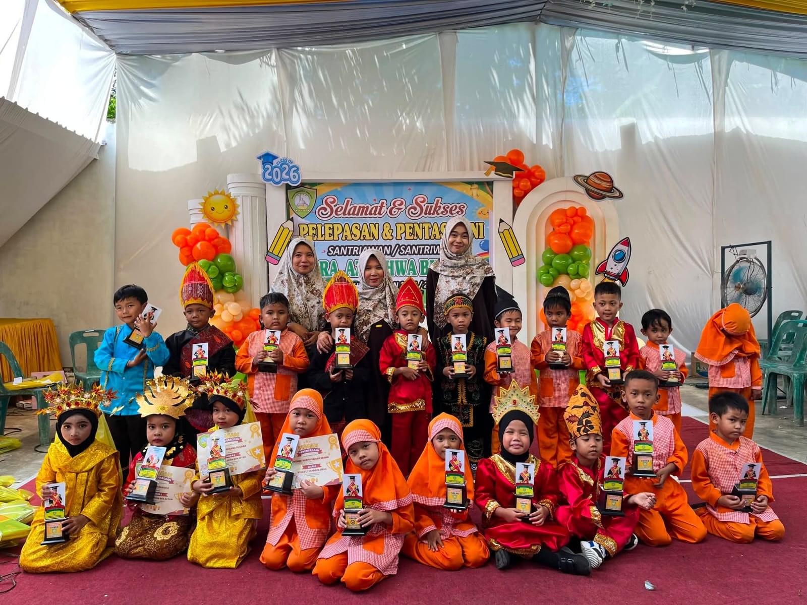
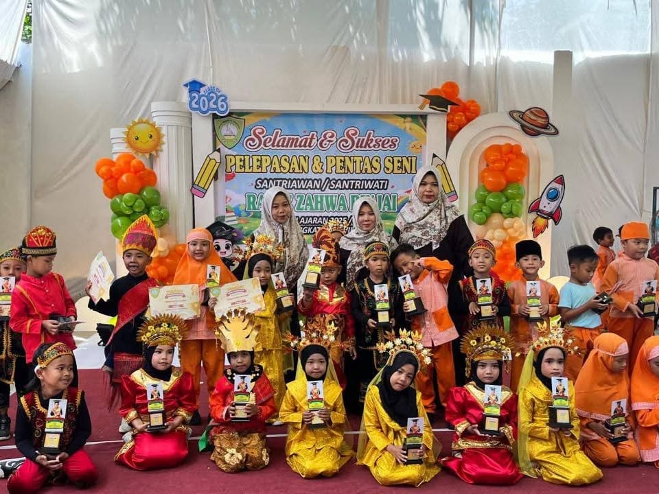
Acara Pentas Seni dan Perpisahan ditutup dengan sesi foto bersama antara siswa-siswi, guru, dan orang tua sebagai kenang-kenangan atas perjalanan pendidikan yang telah dilalui bersama.
Melalui kegiatan ini, diharapkan siswa-siswi RA AZ ZAHWA BINJAI semakin percaya diri dalam mengembangkan bakat, mencintai budaya Indonesia, serta tetap menjunjung tinggi nilai-nilai Islam dalam kehidupan sehari-hari.